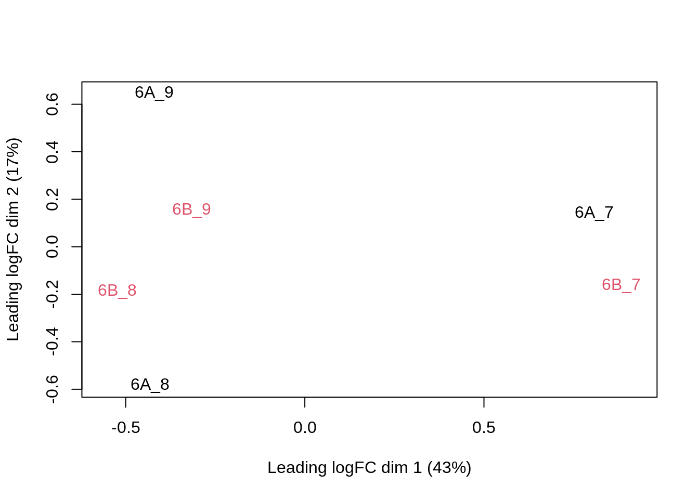
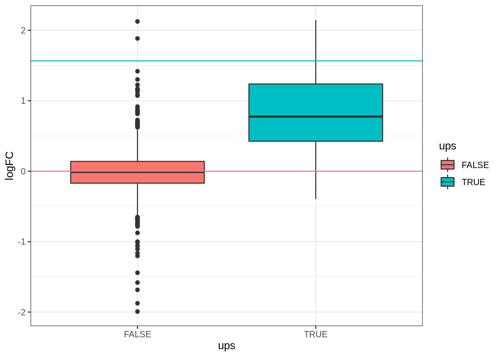

EuroBioc demo: Analysis of the CPTAC Spike-in Study
Lieven Clement and Laurent Gattp

This is part of the online course Proteomics Data Analysis (PDA)
1 QFeatures: data infrastructure
We will use the QFeatures package that provides the infrastructure to store, process, manipulate and analyse quantitative data/features from mass spectrometry experiments.
- It is based on the
SummarizedExperimentandMultiAssayExperimentclasses.

Conceptual representation of a SummarizedExperiment object. Assays contain information on the measured omics features (rows) for different samples (columns). The rowData contains information on the omics features, the colData contains information on the samples, i.e. experimental design etc.
Assays in a QFeatures object have a hierarchical relation: - proteins are composed of peptides, - themselves produced by peptide spectrum matches - relations between assays are tracked and recorded throughout data processing
](EuroBiocDemo_files/figure-html/featuresplot-1.png)
Conceptual representation of a QFeatures object and the aggregative relation between different assays. Image from the QFeatures vignette
2 Background of the CPTAC Spike-In Study
This case-study is a subset of the data of the 6th study of the Clinical Proteomic Technology Assessment for Cancer (CPTAC) [5]. In this experiment, the authors spiked the Sigma Universal Protein Standard mixture 1 (UPS1) containing 48 different human proteins in a protein background of 60 ng/\(\mu\)L Saccharomyces cerevisiae strain BY4741.
Five different spike-in concentrations were used: - 6A: 0.25 fmol UPS1 proteins/\(\mu L\), - 6B: 0.74 fmol UPS1 proteins/\(\mu L\), - 6C: 2.22 fmol UPS1 proteins/\(\mu L\), - 6D: 6.67 fmol UPS1 proteins/\(\mu L\) and - 6E: 20 fmol UPS1 proteins/\(\mu L\)).
We limited ourselves to the data of LTQ-Orbitrap W at site 56. The data were searched with MaxQuant version 1.5.2.8, and detailed search settings were described in Goeminne et al. (2016) [1]. Three replicates are available for each concentration.

2.1 Import data in R
Let’s start by loading the packages that we will need
library(tidyverse)
library(limma)
library(QFeatures)
library(msqrob2)
library(plotly)
library(ggplot2)
library(cowplot)
library(gridExtra)2.1.1 Import data from the CPTAC study
- We use a
peptides.txtfile from MS-data quantified with maxquant that contains MS1 intensities summarized at the peptide level. The file contains a subset of the data and is available in themsdatapackage.
(basename(f <- msdata::quant(full.names = TRUE)))## [1] "cptac_a_b_peptides.txt"- Maxquant stores the intensity data for the different samples in columnns that start with “Intensity”. We can retreive the column names with the intensity data with the code below:
grep("Intensity\\.", names(read.delim(f)), value = TRUE)## [1] "Intensity.6A_7" "Intensity.6A_8" "Intensity.6A_9" "Intensity.6B_7"
## [5] "Intensity.6B_8" "Intensity.6B_9"(ecols <- grep("Intensity\\.", names(read.delim(f))))## [1] 56 57 58 59 60 61- Read the data and store it in QFeatures object
qf <- readQFeatures(
f, fnames = 1, ecol = ecols,
name = "peptideRaw", sep = "\t")The QFeatures object qf currently contains a single assay, named peptideRaw, composed of 11466 peptides measured in 45 samples.
qf## An instance of class QFeatures containing 1 assays:
## [1] peptideRaw: SummarizedExperiment with 11466 rows and 6 columnsWe can access the unique assay by index (i.e. 1) or by name (i.e “peptideRaw”) using the [[]] operator, which returns an instance of class SummarizedExperiment:
qf[[1]]## class: SummarizedExperiment
## dim: 11466 6
## metadata(0):
## assays(1): ''
## rownames(11466): AAAAGAGGAGDSGDAVTK AAAALAGGK ... YYTVFDRDNNR
## YYTVFDRDNNRVGFAEAAR
## rowData names(65): Sequence N.term.cleavage.window ...
## Oxidation..M..site.IDs MS.MS.Count
## colnames(6): Intensity.6A_7 Intensity.6A_8 ... Intensity.6B_8
## Intensity.6B_9
## colData names(0):qf[["peptideRaw"]]## class: SummarizedExperiment
## dim: 11466 6
## metadata(0):
## assays(1): ''
## rownames(11466): AAAAGAGGAGDSGDAVTK AAAALAGGK ... YYTVFDRDNNR
## YYTVFDRDNNRVGFAEAAR
## rowData names(65): Sequence N.term.cleavage.window ...
## Oxidation..M..site.IDs MS.MS.Count
## colnames(6): Intensity.6A_7 Intensity.6A_8 ... Intensity.6B_8
## Intensity.6B_9
## colData names(0):2.1.2 Explore object
- The
rowDatacontains information on the features (peptides) in the assay. E.g. Sequence, protein, …
rowData(qf[["peptideRaw"]])[, c("Proteins", "Sequence", "Charges")]## DataFrame with 11466 rows and 3 columns
## Proteins Sequence Charges
## <character> <character> <character>
## AAAAGAGGAGDSGDAVTK sp|P38915|... AAAAGAGGAG... 2
## AAAALAGGK sp|Q3E792|... AAAALAGGK 2
## AAAALAGGKK sp|Q3E792|... AAAALAGGKK 2
## AAADALSDLEIK sp|P09938|... AAADALSDLE... 2
## AAADALSDLEIKDSK sp|P09938|... AAADALSDLE... 3
## ... ... ... ...
## YYSIYDLGNNAVGLAK sp|P07267|... YYSIYDLGNN... 2
## YYTFNGPNYNENETIR sp|Q00955|... YYTFNGPNYN... 2
## YYTITEVATR sp|P38891|... YYTITEVATR 2
## YYTVFDRDNNR P07339ups|... YYTVFDRDNN... 2
## YYTVFDRDNNRVGFAEAAR P07339ups|... YYTVFDRDNN... 3- The
colDatacontains information on the samples, but is currently empty:
colData(qf)## DataFrame with 6 rows and 0 columnsqf[[1]] %>% colnames## [1] "Intensity.6A_7" "Intensity.6A_8" "Intensity.6A_9" "Intensity.6B_7"
## [5] "Intensity.6B_8" "Intensity.6B_9"- We can update the
colDatawith information on the design
qf$lab <- rep("lab3", 6)
qf$condition <- qf[["peptideRaw"]] %>%
colnames %>%
substr(12, 12) %>%
as.factor()
qf$spikeConcentration <- rep(c(A = 0.25, B = 0.74),
each = 3)colData(qf)## DataFrame with 6 rows and 3 columns
## lab condition spikeConcentration
## <character> <factor> <numeric>
## Intensity.6A_7 lab3 A 0.25
## Intensity.6A_8 lab3 A 0.25
## Intensity.6A_9 lab3 A 0.25
## Intensity.6B_7 lab3 B 0.74
## Intensity.6B_8 lab3 B 0.74
## Intensity.6B_9 lab3 B 0.742.2 Missingness
Peptides with zero intensities are missing peptides and should be represent with a NA value rather than 0. This can be done with the zeroIsNA() function. We can then use nNA() on the individual assay to compute missingness summaries:
qf <- zeroIsNA(qf, "peptideRaw")
na <- nNA(qf[[1]])
na## $nNA
## DataFrame with 1 row and 2 columns
## nNA pNA
## <integer> <numeric>
## 1 31130 45.2497
##
## $nNArows
## DataFrame with 11466 rows and 3 columns
## name nNA pNA
## <character> <integer> <numeric>
## 1 AAAAGAGGAG... 4 66.6667
## 2 AAAALAGGK 0 0.0000
## 3 AAAALAGGKK 0 0.0000
## 4 AAADALSDLE... 0 0.0000
## 5 AAADALSDLE... 0 0.0000
## ... ... ... ...
## 11462 YYSIYDLGNN... 6 100.0000
## 11463 YYTFNGPNYN... 3 50.0000
## 11464 YYTITEVATR 4 66.6667
## 11465 YYTVFDRDNN... 6 100.0000
## 11466 YYTVFDRDNN... 6 100.0000
##
## $nNAcols
## DataFrame with 6 rows and 3 columns
## name nNA pNA
## <character> <integer> <numeric>
## 1 Intensity.... 4743 41.3658
## 2 Intensity.... 5483 47.8196
## 3 Intensity.... 5320 46.3980
## 4 Intensity.... 4721 41.1739
## 5 Intensity.... 5563 48.5174
## 6 Intensity.... 5300 46.2236- 31130 peptides intensities, corresponding to 45%, are missing and for some peptides we do not even measure a signal in any sample.
- For each sample, the proportion fluctuates between 41.4 and 48.5%.
- The table below shows the number of peptides that have 0, 1, … and up to 6 missing values.
table(na$nNArows$nNA)##
## 0 1 2 3 4 5 6
## 4059 990 884 717 934 807 30753 Preprocessing
This section preforms preprocessing for the peptide data. This include
- log transformation,
- filtering and
- summarisation of the data.
3.1 Log transform the data
qf <- logTransform(qf, base = 2, i = "peptideRaw", name = "peptideLog")3.2 Filtering
- Handling overlapping protein groups
In our approach a peptide can map to multiple proteins, as long as there is none of these proteins present in a smaller subgroup.
qf <- filterFeatures(qf, ~ Proteins %in% smallestUniqueGroups(rowData(qf[["peptideLog"]])$Proteins))- Remove reverse sequences (decoys) and contaminants
We now remove the contaminants and peptides that map to decoy sequences.
qf <- qf |>
filterFeatures(~ Reverse != "+") |>
filterFeatures(~ Potential.contaminant != "+")
qf## An instance of class QFeatures containing 2 assays:
## [1] peptideRaw: SummarizedExperiment with 10678 rows and 6 columns
## [2] peptideLog: SummarizedExperiment with 10678 rows and 6 columns- Drop peptides that were only identified in one sample
We keep peptides that were observed at last twice, i.e. those that have no more that 4 missing values
qf <- filterFeatures(qf, ~ nNA(qf[[1]])$nNArows$nNA <= 4)
qf## An instance of class QFeatures containing 2 assays:
## [1] peptideRaw: SummarizedExperiment with 7011 rows and 6 columns
## [2] peptideLog: SummarizedExperiment with 7011 rows and 6 columnsWe keep 7011 peptides upon filtering.
3.3 Normalize the data using median centering
We normalize the data by substracting the sample median from every intensity for peptide \(p\) in a sample \(i\):
\[y_{ip}^\text{norm} = y_{ip} - \hat\mu_i\]
with \(\hat\mu_i\) the median intensity over all observed peptides in sample \(i\).
qf <- normalize(qf,
i = "peptideLog",
name = "peptideNorm",
method = "center.median")
qf## An instance of class QFeatures containing 3 assays:
## [1] peptideRaw: SummarizedExperiment with 7011 rows and 6 columns
## [2] peptideLog: SummarizedExperiment with 7011 rows and 6 columns
## [3] peptideNorm: SummarizedExperiment with 7011 rows and 6 columns3.4 Explore normalized data
Upon the normalisation the density curves follow a similar distribution.
as_tibble(longFormat(qf[, , 2:3], colvars = "condition")) %>%
ggplot(aes(x = value, group = primary, colour = condition)) +
geom_density() +
facet_grid(assay ~ .) +
theme_bw()## Warning: 'experiments' dropped; see 'metadata'## harmonizing input:
## removing 6 sampleMap rows not in names(experiments)## Warning: Removed 16334 rows containing non-finite values (stat_density).We can visualize our data using a Multi Dimensional Scaling plot, eg. as provided by the limma package.
tmp <- assay(qf[["peptideNorm"]])
colnames(tmp) <- str_replace_all(colnames(tmp), "Intensity.6","")
tmp %>%
limma::plotMDS(col = as.numeric(colData(qf)$condition))
The first axis in the plot is showing the leading log fold changes (differences on the log scale) between the samples.
We notice that the leading differences (log FC) in the peptide data seems to be driven by technical variability. Indeed, the samples do not seem to be clearly separated according to the spike-in condition.
4 Median summarization
4.1 Preprocessing
- We use median summarization in aggregateFeatures.
- Note, that this is a suboptimal normalisation procedure!
- By default robust summarization is used:
fun = MsCoreUtils::robustSummary()
qf <- aggregateFeatures(qf,
i = "peptideNorm",
fcol = "Proteins",
na.rm = TRUE,
name = "proteinMedian",
fun = matrixStats::colMedians)## Your quantitative and row data contain missing values. Please read the
## relevant section(s) in the aggregateFeatures manual page regarding the
## effects of missing values on data aggregation.qf## An instance of class QFeatures containing 4 assays:
## [1] peptideRaw: SummarizedExperiment with 7011 rows and 6 columns
## [2] peptideLog: SummarizedExperiment with 7011 rows and 6 columns
## [3] peptideNorm: SummarizedExperiment with 7011 rows and 6 columns
## [4] proteinMedian: SummarizedExperiment with 1389 rows and 6 columnstmp <- assay(qf[["proteinMedian"]])
colnames(tmp) <- str_replace_all(colnames(tmp), "Intensity.6","")
tmp %>%
limma::plotMDS(col = as.numeric(colData(qf)$condition))
4.2 Data Analysis
4.2.1 Estimation
We model the protein level expression values using msqrob. By default msqrob2 estimates the model parameters using robust regression.
We will model the data with a different group mean. The group is incoded in the variable condition of the colData. We can specify this model by using a formula with the factor condition as its predictor: formula = ~condition.
Note, that a formula always starts with a symbol ‘~’.
qf <- msqrob(object = qf,
i = "proteinMedian",
formula = ~condition,
overwrite = TRUE)rowData(qf[["proteinMedian"]])[, c("Proteins", ".n", "msqrobModels")]## DataFrame with 1389 rows and 3 columns
## Proteins .n msqrobModels
## <character> <integer> <list>
## O00762ups|UBE2C_HUMAN_UPS O00762ups|... 2 StatModel:rlm
## P00167ups|CYB5_HUMAN_UPS P00167ups|... 1 StatModel:fitError
## P00441ups|SODC_HUMAN_UPS P00441ups|... 3 StatModel:rlm
## P00709ups|LALBA_HUMAN_UPS P00709ups|... 3 StatModel:rlm
## P00915ups|CAH1_HUMAN_UPS P00915ups|... 1 StatModel:fitError
## ... ... ... ...
## sp|Q99258|RIB3_YEAST sp|Q99258|... 4 StatModel:rlm
## sp|Q99260|YPT6_YEAST sp|Q99260|... 1 StatModel:fitError
## sp|Q99287|SEY1_YEAST sp|Q99287|... 1 StatModel:rlm
## sp|Q99383|HRP1_YEAST sp|Q99383|... 3 StatModel:rlm
## sp|Q99385|VCX1_YEAST sp|Q99385|... 1 StatModel:fitError4.2.2 Inference
First, we extract the parameter names of the model by looking at the first model. The models are stored in the row data of the assay under the default name msqrobModels.
getCoef(rowData(qf[["proteinMedian"]])$msqrobModels[[1]])## (Intercept) conditionB
## -2.793005 1.541958We can also explore the design of the model that we specified using the the package ExploreModelMatrix
library(ExploreModelMatrix)
VisualizeDesign(colData(qf),~condition)$plotlist[[1]]Spike-in condition A is the reference class. So the mean log2 expression for samples from condition A is ‘(Intercept). The mean log2 expression for samples from condition B is’(Intercept)+conditionB’.
Hence, the average log2 fold change between condition b and condition a is modelled using the parameter ‘conditionB’. Thus, we assess the contrast ‘conditionB = 0’ with our statistical test.
L <- makeContrast("conditionB=0", parameterNames = c("conditionB"))
qf <- hypothesisTest(object = qf, i = "proteinMedian", contrast = L)4.2.3 Plots
4.2.3.1 Volcano-plot
tmp <- rowData(qf[["proteinMedian"]])$conditionB[complete.cases(rowData(qf[["proteinMedian"]])$conditionB),]
tmp$shapes <- 16
volcanoMedian<- ggplot(tmp,
aes(x = logFC, y = -log10(pval), color = adjPval < 0.05)) +
geom_point(cex = 2.5, shape = tmp$shapes) +
#geom_point(x =FP$logFC, y = -log10(FP$pval), shape = 8, size = 4 )+
scale_color_manual(values = alpha(c("black", "red"), 0.5)) +
theme_bw() +
ggtitle(paste0("Median: TP = ",sum(tmp$adjPval<0.05&grepl(rownames(tmp),pattern ="UPS"),na.rm=TRUE), " FP = ", sum(tmp$adjPval<0.05&!grepl(rownames(tmp),pattern ="UPS"),na.rm=TRUE)))
volcanoMedianNote, that only 2 proteins are found to be differentially abundant.
4.2.3.2 Heatmap
We first select the names of the proteins that were declared significant
sigNames <- rowData(qf[["proteinMedian"]])$conditionB %>%
rownames_to_column("proteinMedian") %>%
filter(adjPval<0.05) %>%
pull(proteinMedian)
heatmap(assay(qf[["proteinMedian"]])[sigNames, ],cexRow = 1, cexCol = 1)
sigProteins <- rowData(qf[["proteinMedian"]])$conditionB %>%
rownames_to_column("proteinMedian") %>%
filter(grepl("UPS",proteinMedian)) %>%
pull(proteinMedian)
heatmap(assay(qf[["proteinMedian"]])[sigProteins, ], cexCol = 1)
The majority of the proteins are indeed UPS proteins. 1 yeast protein is returned. Note, that the yeast protein indeed shows evidence for differential abundance.
4.2.3.3 Boxplots
We create a boxplot of the log2 FC and group according to the whether a protein is spiked or not.
rowData(qf[["proteinMedian"]])$conditionB %>%
rownames_to_column(var = "protein") %>%
mutate(ups=grepl("UPS",protein)) %>%
ggplot(aes(x=ups, y =logFC, fill = ups)) +
geom_boxplot() +
theme_bw() +
geom_hline(yintercept = log2(0.74 / .25), color = "#00BFC4") +
geom_hline(yintercept = 0, color = "#F8766D")## Warning: Removed 166 rows containing non-finite values (stat_boxplot).
5 Session Info
With respect to reproducibility, it is highly recommended to include a session info in your script so that readers of your output can see your particular setup of R.
sessionInfo()## R version 4.2.1 (2022-06-23)
## Platform: x86_64-pc-linux-gnu (64-bit)
## Running under: Ubuntu 20.04.5 LTS
##
## Matrix products: default
## BLAS: /usr/lib/x86_64-linux-gnu/blas/libblas.so.3.9.0
## LAPACK: /usr/lib/x86_64-linux-gnu/lapack/liblapack.so.3.9.0
##
## locale:
## [1] LC_CTYPE=C.UTF-8 LC_NUMERIC=C LC_TIME=C.UTF-8
## [4] LC_COLLATE=C.UTF-8 LC_MONETARY=C.UTF-8 LC_MESSAGES=C.UTF-8
## [7] LC_PAPER=C.UTF-8 LC_NAME=C LC_ADDRESS=C
## [10] LC_TELEPHONE=C LC_MEASUREMENT=C.UTF-8 LC_IDENTIFICATION=C
##
## attached base packages:
## [1] stats4 stats graphics grDevices datasets utils methods
## [8] base
##
## other attached packages:
## [1] ExploreModelMatrix_1.8.0 gridExtra_2.3
## [3] cowplot_1.1.1 plotly_4.10.0
## [5] msqrob2_1.4.0 QFeatures_1.6.0
## [7] MultiAssayExperiment_1.22.0 SummarizedExperiment_1.26.1
## [9] Biobase_2.56.0 GenomicRanges_1.48.0
## [11] GenomeInfoDb_1.32.4 IRanges_2.30.1
## [13] S4Vectors_0.34.0 BiocGenerics_0.42.0
## [15] MatrixGenerics_1.8.1 matrixStats_0.62.0
## [17] limma_3.52.3 forcats_0.5.2
## [19] stringr_1.4.1 dplyr_1.0.10
## [21] purrr_0.3.4 readr_2.1.2
## [23] tidyr_1.2.1 tibble_3.1.8
## [25] ggplot2_3.3.6 tidyverse_1.3.2
##
## loaded via a namespace (and not attached):
## [1] googledrive_2.0.0 minqa_1.2.4 colorspace_2.0-3
## [4] ellipsis_0.3.2 XVector_0.36.0 fs_1.5.2
## [7] clue_0.3-61 farver_2.1.1 DT_0.25
## [10] fansi_1.0.3 lubridate_1.8.0 xml2_1.3.3
## [13] codetools_0.2-18 splines_4.2.1 cachem_1.0.6
## [16] knitr_1.40 jsonlite_1.8.0 nloptr_2.0.3
## [19] broom_1.0.1 cluster_2.1.4 dbplyr_2.2.1
## [22] shinydashboard_0.7.2 shiny_1.7.2 BiocManager_1.30.18
## [25] compiler_4.2.1 httr_1.4.4 backports_1.4.1
## [28] assertthat_0.2.1 Matrix_1.5-1 fastmap_1.1.0
## [31] lazyeval_0.2.2 gargle_1.2.1 cli_3.4.0
## [34] later_1.3.0 htmltools_0.5.3 tools_4.2.1
## [37] igraph_1.3.4 gtable_0.3.1 glue_1.6.2
## [40] GenomeInfoDbData_1.2.8 Rcpp_1.0.9 cellranger_1.1.0
## [43] jquerylib_0.1.4 vctrs_0.4.1 nlme_3.1-159
## [46] rintrojs_0.3.2 xfun_0.33 lme4_1.1-30
## [49] rvest_1.0.3 mime_0.12 lifecycle_1.0.2
## [52] renv_0.15.5 googlesheets4_1.0.1 zlibbioc_1.42.0
## [55] MASS_7.3-58.1 scales_1.2.1 promises_1.2.0.1
## [58] hms_1.1.2 ProtGenerics_1.28.0 parallel_4.2.1
## [61] AnnotationFilter_1.20.0 yaml_2.3.5 sass_0.4.2
## [64] stringi_1.7.8 highr_0.9 boot_1.3-28
## [67] BiocParallel_1.30.3 rlang_1.0.5 pkgconfig_2.0.3
## [70] bitops_1.0-7 evaluate_0.16 lattice_0.20-45
## [73] labeling_0.4.2 htmlwidgets_1.5.4 tidyselect_1.1.2
## [76] magrittr_2.0.3 R6_2.5.1 generics_0.1.3
## [79] DelayedArray_0.22.0 DBI_1.1.3 pillar_1.8.1
## [82] haven_2.5.1 withr_2.5.0 MsCoreUtils_1.8.0
## [85] RCurl_1.98-1.8 msdata_0.36.0 modelr_0.1.9
## [88] crayon_1.5.1 utf8_1.2.2 tzdb_0.3.0
## [91] rmarkdown_2.16 grid_4.2.1 readxl_1.4.1
## [94] data.table_1.14.2 reprex_2.0.2 digest_0.6.29
## [97] xtable_1.8-4 httpuv_1.6.6 munsell_0.5.0
## [100] viridisLite_0.4.1 bslib_0.4.0 shinyjs_2.1.0